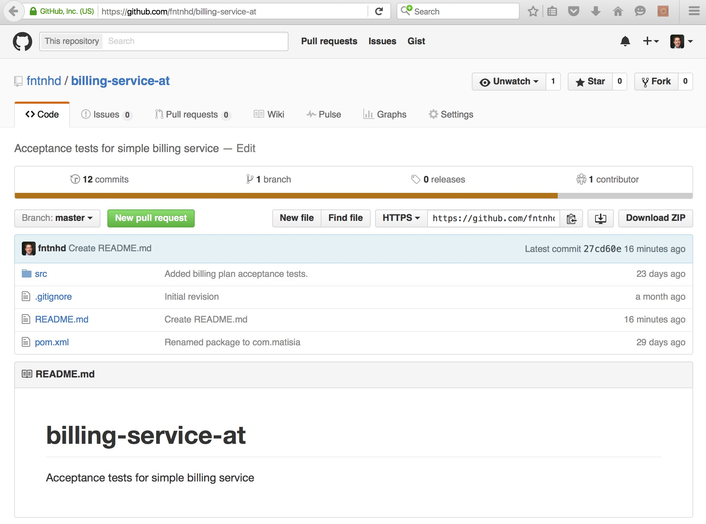

setup a github repository for the acceptance tests

This repository is used to manage versions of the acceptance tests that validate the application code
This repository is used to manage versions of the acceptance tests that validate the application code